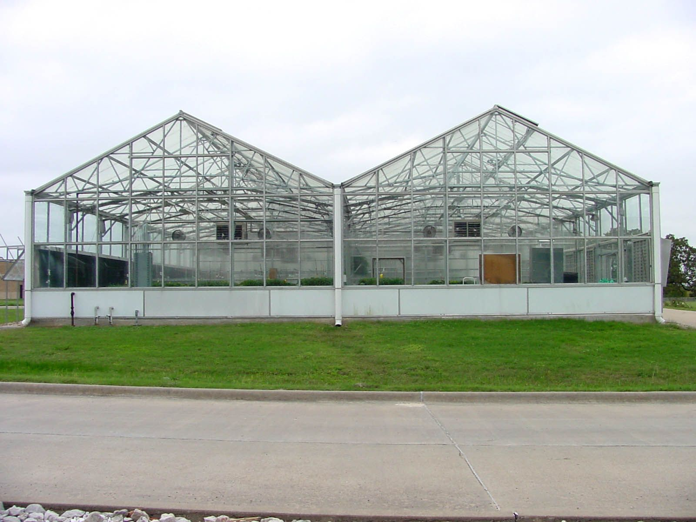
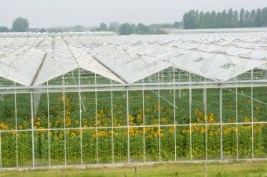

Designs of this type use two or more A-frame greenhouses connected to one another along the length of the eave. The eave serves as furrow or gutter to carry rain and melted snow away. The side wall is eliminated between the greenhouses, which results in a structure with a single large interior, Consolidation of interior space reduces labour, lowers the cost of automation, improves personal management and reduces fuel consumption as there is less exposed wall area through which heat escapes. The snow loads must be taken into the frame specifications of these greenhouses since the snow cannot slide off the roofs as in case of individual free standing greenhouses, but melts away. In spite of snow loads, ridge and furrow greenhouses are effectively used in northern countries of Europe and in Canada and are well suited to the Indian conditions.
A furrow is a shallow trench that is dug into the soil for planting seeds or seedlings.Historically, furrows were created using only a hand hoe. Nowadays, commercial farmers produce long furrows across a field using a furrower, which is a mechanical digger.Some gardeners opt to purchase a specialized furrow attachment that they can hook onto their equipment to make a furrow mechanically. Crops such as corn, lettuce, and corn are usually planted in furrows.